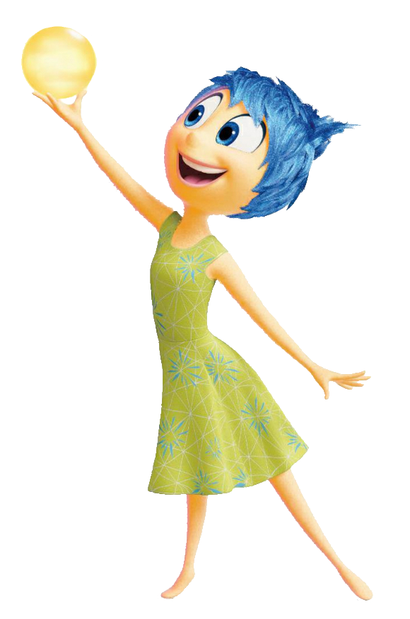
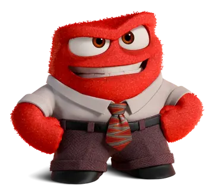
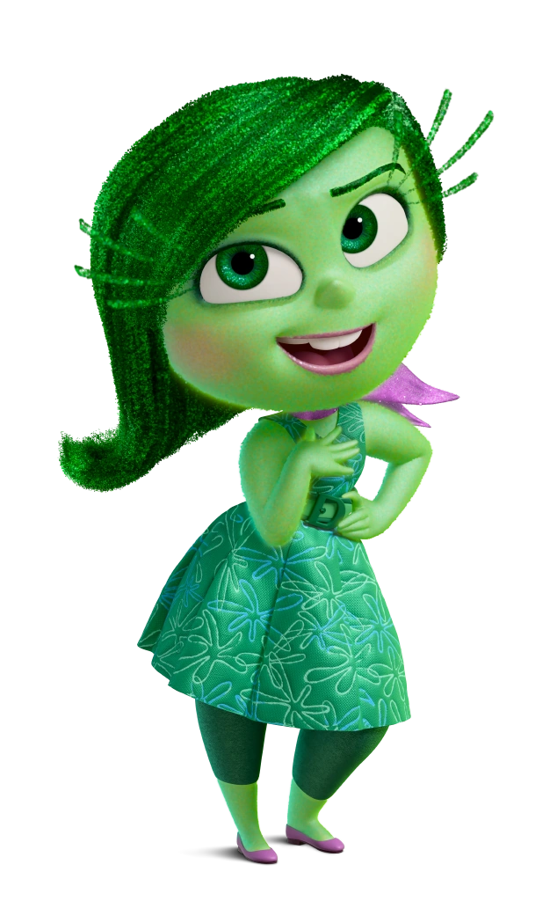
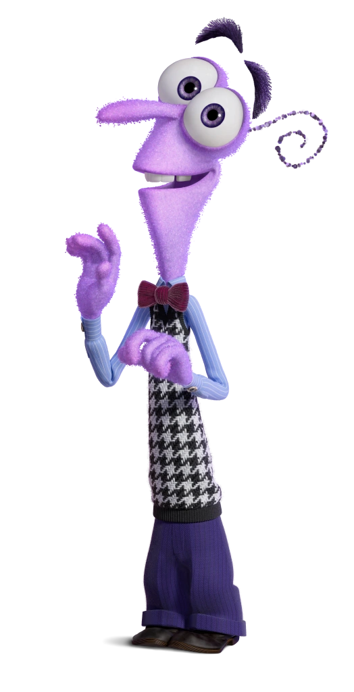

Core Emotions (InsideOut)
| Image | Name | Info |
|  | Joy | She is a core emotion of Riley that leads the other core emotions. She wears a green dress and has a blue hair. |
|  | Anger | He is intelligent, very serious, short, somewhat antagonistic, very reluctant to express sadness or happiness, bitter and hoarse, but has a somewhat underlying caring nature. |
|  | Disgust | She is highly opinionated, extremely honest and prevents Riley from getting poisoned. |
|  | Fear | He appears to be very paranoid and unsure of himself, and often tries to protect Riley from danger, a description that matches his name. |
 |
Sadness | She appears to be depressive and shy most of the time, but there are a few instances where she is seen smiling. |